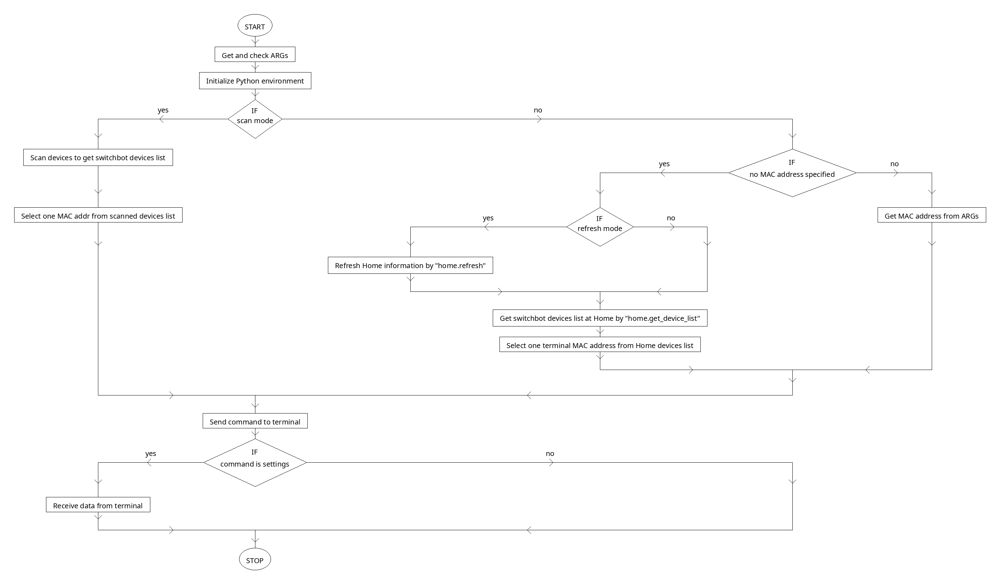

SwitchBot制御プログラム（以後、switchbot）は、Raspberry PiおよびLinux(Ubuntu)環境で、SwitchBotを制御するサンプルプログラムです。 プログラムには、Python版とc++版があります。
SwitchBotは、すべてのスイッチとボタンを機械的に制御するスマートIoTロボットです。スマートフォンアプリ（iOSまたはAndroid)でボットを制御できます。
/home/pi/SwitchBot/examples/cpp/switchbot下のファイルがswitchbotのご提供プログラム関連ファイル一式となります。
pi@raspberrypi:~/SwitchBot-test/examples/cpp/switchbot $ ls -l
合計 76
-rw-r--r-- 1 pi pi 1506 7月 22 04:44 CMakeLists.txt
-rw-r--r-- 1 pi pi 1504 7月 22 04:53 CMakeLists.txt.linux
-rwxr--r-- 1 pi pi 1506 7月 22 04:23 CMakeLists.txt.raspi
-rw-r--r-- 1 pi pi 15595 7月 17 11:24 argparse.hpp
-rw-r--r-- 1 pi pi 348 7月 17 17:26 device_list.json
-rw-r--r-- 1 pi pi 652 7月 17 17:26 device_list_lint.json
-rwxr-xr-x 1 pi pi 848 7月 17 12:43 get_device_list.sh
-rw-r--r-- 1 pi pi 10819 7月 19 17:55 switchbot.cpp
-rw-r--r-- 1 pi pi 97 7月 17 12:43 switchbot_open_token.txt
-rwxr--r-- 1 pi pi 11833 7月 20 09:11 switchbot_py3.py
Python版は、主にRaspberry Pi環境でSwitchBotを制御するための超軽量ソリューションを提供することを目的としています。SwitchBotの開発会社であるOpenWonderLabs社よりGithubに提供されている、python-hostリポジトリのサンプルをもとに作成しました。
python-hostディストリビューションは、Python 2.7でサポートされ、テストされていますが、python3環境では一部前提ライブラリが提供されなくなっています。今回は、python3環境で稼働するため、新しいスタックを前提にプログラムを作成、テストしています。
前提：
今回は設定済みのSD Cardをご提供しますので、そちらを使いPiを起動してください。その場合、以下1.~2.の操作は不要です。ご提供するRaspbian環境のログイン情報等は、以下の通りです。
元のswitchbot.pyスクリプトはPython2とbluepyでのみ機能し、最新のBluezリリースで廃止された古いutils（hciconfigやhcitoolなど）に依存しています。
Debian 11 "Bullseye"、Raspberry Pi OS、またはUbuntu21.10以降に必要な依存関係をインストールするには：
sudo apt install python3-bluez
古いバージョンのUbuntu/Raspbianの場合：
sudo apt-get install python3-pip
sudo apt-get install libbluetooth-dev
pip3 install pybluez
sudo apt-get install libboost-python-dev
sudo apt-get install libboost-thread-dev
pip3 install gattlib
何らかの理由でgattlibのインストールが失敗した場合はソースからビルドします。
sudo apt-get install pkg-config python3-dev
sudo apt-get install libglib2.0-dev
pip3 download gattlib
tar xvzf ./gattlib-0.20150805.tar.gz
cd gattlib-0.20150805/
sed -ie 's/boost_python-py34/boost_python-py36/' setup.py # "py36" might be "py37" (for example). Check "python3 --version"
pip3 install .
提供したプログラム一式をLinux環境の(インストールディレクトリ eg. SwitchBot-test)/examples/cpp/下に複製します。 c++プログラムのビルドは以下の通り行います。
cd (インストールディレクトリ)/SwitchBot-test/examples/cpp/switchbot
cp CMakeLists.txt.raspi CMakeLists.txt
cd (インストールディレクトリ)/SwitchBot-test/examples
mkdir build
cd build
cmake ..
make
実行ファイルは下記の通り(インストールディレクトリ)/examples/build/bin/に作成されます。 "switchbot_open_token.txt"の内容はPython版と同じく取得したトークンを記入してください。
pi@raspberrypi:~/SwitchBot/examples/build/bin $ ls switchbot*
switchbot switchbot_open_token.txt switchbot_py3.py
次の2つの方法で使用できます。
sudo python3 switchbot_py3.py -s -c press
sudo python3 switchbot_py3.py -d xx:xx:xx:xx:xx:xx -c press
sudo python3 switchbot_py3.py -c press
Home情報取得のためにRaspberry Piはインターネットに接続する必要があります。また、事前に以下の手順で開発者トークンの取得が必要です。
コマンドは、press, on, off, settingsがあります。settingsは、バッテリー残量を表示します。 なお、SwitchBotの押すモードとスイッチモードの切り替えは、スマートフォンアプリの設定で実行してください。
ヘルプを表示するには
sudo python3 switchbot_py3.py --help
以下のようにコマンドオプションが表示されます。
pi@raspberrypi:~/SwitchBot/examples/build/bin $ ./switchbot --help
usage: switchbot [OPTIONS]...
switchbot control program
keyword arguments:
--help, -h : show this help
--scan, -s : Run Switchbot in scan mode - scan devices to control
--scan-timeout VALUE : Device scan timeout (default: 2 seconds)
--connect-timeout VALUE : Device connection timeout (default: 2 seconds)
--device VALUE, -d VALUE : Specify the address of a device to control
--interface VALUE, -i VALUE : Name of the bluetooth adapter (default: hci0 or whichever is the default)
--command VALUE, -c VALUE : Specify the command to run (default: press). commands are press,on,off,open,close,pause,settings.
--refresh, -r : Refresh local device list
SwitchBot
c++版は、主にUbuntu環境でSwitchBotを制御するための超軽量ソリューションを提供することを目的としていますが、Raspberry Pi環境でも稼働を確認しています。今回c++での実装にあたり調べた範囲で、OpenWonderLabs社等より、c++の実装サンプルなどの提供はありませんでした。そのため、SwitchBot API-BLE等の情報と実際のテストにより、プログラムを作成しました。提供する機能はPython版と同じです。
BLEへのアクセスには、クロスプラットフォームで利用できるSimpleBLEを使用しました。SimpleBLEは、シンプルさと使いやすさを求めて設計されたC++のクロスプラットフォームBLEライブラリです。すべてのプラットフォーム、ライブラリの各メジャーバージョンで一貫した動作と完全な上位互換性のある安定したAPIを提供します。 結果的にPython版より安定した制御を行うことができました。
| Windows | Linux | MacOS | iOS |
|---|---|---|---|
| Windows 10+ | Ubuntu 20.04+ | 10.15+ (except 12.0, 12.1 and 12.2) | 15.0+ |
記載されてはいませんが、Raspberry Pi 4環境でもc++プログラムが正常に稼働しました。
前提：
sudo apt-get install libdbus-1-dev
提供したプログラム一式をLinux環境の(インストールディレクトリ eg. SwitchBot-test)/examples/cpp/下に複製します。 c++プログラムのビルドは以下の通り行います。
cd (インストールディレクトリ)/SwitchBot-test/examples/cpp/switchbot
cp CMakeLists.txt.linux CMakeLists.txt
cd (インストールディレクトリ)/SwitchBot-test/examples
mkdir build
cd build
cmake ..
make
実行ファイルは下記の通り(インストールディレクトリ)/examples/build/bin/に作成されます。 "switchbot_open_token.txt"の内容はPython版と同じく取得したトークンを記入してください。
user@ubuntu:~/SwitchBot/examples/build/bin $ ls switchbot*
switchbot switchbot_open_token.txt switchbot_py3.py
前提ライブラリの導入先が異なるなど、環境が異なる場合、CMakeLists.txtの内容を変更する必要があるかもしれません。
次の2つの方法で使用できます。
sudo ./switchbot -s -c press
sudo ./switchbot -d xx:xx:xx:xx:xx:xx -c press
sudo ./switcbot -c press
コマンドは、Python版と同じです。
ヘルプを表示するには
sudo ./switchbot -help
外層
SimpleBLE::AdapterおよびSimpleBLE::Peripheralクラス。SimpleBLE::AdapterBase、SimpleBLE::PeripheralBaseへの共有ポインタを保持します。C-スタイル ラッパー層
セーフ層
SimpleBLE::AdapterSafe および SimpleBLE::PeripheralSafeクラス。SimpleBLE::Adapter および
SimpleBLE::Peripheral オブジェクトへの例外を発生しないインターフェースを提供します。
代わりに、関数が値を返す場合はstd ::optional <T> オブジェクト、または元の関数が値を返さない場合は成功したかどうかを示すブール値を返します。機能的には元の関数と同じです。API層 (OS依存)
SimpleBLE::AdapterBase および SimpleBLE::PeripheralBaseクラス。SimpleBLE::AdapterBuilder および
SimpleBLE::PeripheralBuilderが提供され、ビルドプロセス中にプライベートメソッドへのアクセスを許可します。SimpleBLEの使用方法については、switchbotプログラム以外に、ライブラリから提供されているサンプルを参照してください。 サフィックスに_safeを含むサンプルは、ライブラリの_noexcept_バージョンを使用します。
list_adapters_: 使用可能なすべてのアダプターをリストします。scan (cpp)_ & scan (c)_: 近くのBLEデバイスをスキャンします。connect (cpp)_ & connect_safe (cpp)_ & connect (c)_: BLEデバイスに接続し、そのサービスと特性を一覧表示します。read_: 特性の値を読み取ります。write_: 特性の値を書き込みます。notify (cpp)_ & notify (c)_: 特性に関する通知を有効にします。SimpleBLEを使用してアプリケーションを設計する場合、並行性を考慮に入れる必要があります。内部的にライブラリは、非同期操作を処理するためにオペレーティングシステムのスレッドプールに依存しています。 このため、特にスレッド処理が大幅に遅延した時、Bluetoothスタックのポーリングで競合が発生し、プログラムがクラッシュまたはフリーズする可能性があることを意味します。 これは、WxWidgetsやUnityなどのUIアプリケーションでSimpleBLEを使用するときに重要な意味があります。
ライブラリの重要なセキュリティ機能の1つは、すべての内部依存関係のURLとタグにより、内部または安全なソースからユーザーが指定できることです。そのため危険にさらされるリスクなしに、コンパイルが可能になります。
Python版、c++版とも、switchbot メインプログラムのフローチャートは同じです。

switchbot_py3 module
********************
class switchbot_py3.Driver(device: str, bt_interface: Optional[str] = None, timeout_secs: Optional[int] = None)
Bases: "object"
Bluetoothにアクセスするためのドライバークラス
Args:
object (Driver): Driverインスタンス
Returns:
Driver: Driverインスタンス
commands = {'close': b'W\x0fE\x01\x05\xffd', 'off': b'W\x01\x02', 'on': b'W\x01\x01', 'open': b'W\x0fE\x01\x05\xff\x00', 'pause': b'W\x0fE\x01\x00\xff', 'press': b'W\x01\x00', 'settings': b'W\x02'}
get_settings_value(value) -> int
レスポンスからバッテリー残量を抽出
Args:
value (bytes): レスポンス
Returns:
int: バッテリー残量(%)
handles = {'close': 13, 'off': 22, 'on': 22, 'open': 13, 'pause': 13, 'press': 22, 'settings': 22}
notif_handle = 19
run_and_res_command(command: str)
_summary_
Args:
command (str): コマンド(レスポンスあり)
Returns:
object: 接続ハンドル
run_command(command: str)
_summary_
Args:
command (str): コマンド(レスポンスなし)
Returns:
object: 接続ハンドル
class switchbot_py3.Home(token_file: Optional[str] = None, device_list_file: Optional[str] = None)
Bases: "object"
ホームクラス SwitchBotアプリでホームに登録した端末情報
Args:
object (Home): Homeインスタンス
get_device_list()
ローカル端末情報から得たMACアドレスのリスト取得
Returns:
[str]: 端末MACアドレスのリスト
refresh()
Switchbot APIによりローカル端末情報を更新
class switchbot_py3.Scanner(bt_interface: Optional[str] = None, scan_timeout: Optional[int] = None, connect_timeout: Optional[float] = None)
Bases: "object"
スキャナークラス
Args:
object (Scanner): Scannerインスタンス
Returns:
Scanner: Scannerインスタンス
classmethod is_switchbot(device: str, bt_interface: str, timeout: float) -> bool
Terminalがスイッチボットのインスタンスか
Args:
device (str): Terminal MAC address bt_interface (str):
Bluetoothインターフェース timeout (float): タイムアウト(秒)
Returns:
bool: スイッチボットならTrue
scan()
Terminalをスキャン
Returns:
[str]: MACアドレスのリスト
service_uuid = 'cba20002-224d-11e6-9fb8-0002a5d5c51b'
switchbot_py3.connect(device: str, bt_interface: str, timeout: float)
Terminalに接続
Args:
device (str): Terminal MAC address bt_interface (str):
Bluetooth インターフェース (eg. hci0) timeout (float): 接続タイ
ムアウト(秒)
Raises:
ConnectionError: 接続エラー例外
Yields:
object: 接続ハンドル
switchbot_py3.main()
メイン関数
@BlackLight @rcmdnk @tony-wallace
SwitchBot (Official website) Facebook @SwitchBotRobot Twitter @SwitchBot
収録された情報、プログラム等について
弊社は、提供される情報、ソフトウェア、第三者のウェブ・サイトへのリンクまたは第三者の提供する商品、サービスもしくは権利等の一切について、その完全性、正確性、適時性、妥当性、速報性、信頼性、合目的性、有用性、商品性、知的財産権の不侵害または第三者による債務の履行もしくは瑕疵の有無その他につきいかなる保証も行わず、またこれらに関して担保責任を負いません。収録されたプログラム等によって，ユーザーのコンピュータ，またはネットワーク環境等に支障･障害が生じた場合，弊社はいかなる理由によるものでも一切責任を負いません。また，これらの事象によって生じた損害等についても，弊社は一切責任を負いません。弊社は原則として，収録されたプログラム等に関して，個別のお問い合わせには応じておりません。